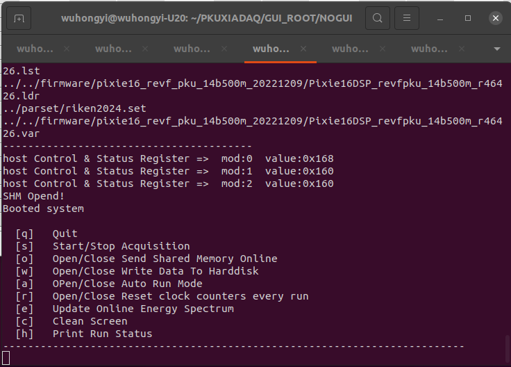
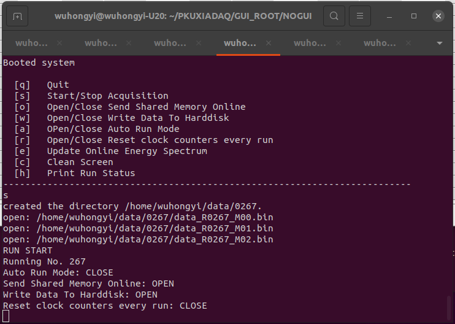

NOGUI¶
Interface¶
When the program is started, the firmware will be automatically loaded for initialization. After the initialization is completed, the following interface appears
The following are the functions of all commands.
[q] Exit the program
[s] Controls the start and stop of the acquisition
[o] Controls the opening and closing of online shared memory
[w] Control data write to the hard disk on and off
[a] Controls the automatic operation mode on and off
[e] Refreshing the spectrum of online monitoring
[c] Clear the screen to display this command prompt
[h] Output operation control parameters
The figure below is a typical running interface information, which can clearly see the current operating mode.
auto run¶
When the automatic operation mode is turned on, it will automatically switch to the next round according to the time set by the user.
The time parameter is set in the file parset/cfgPixie16.txt
# Only use in NOGUI, unit: second
AutoRunModeTimes 180